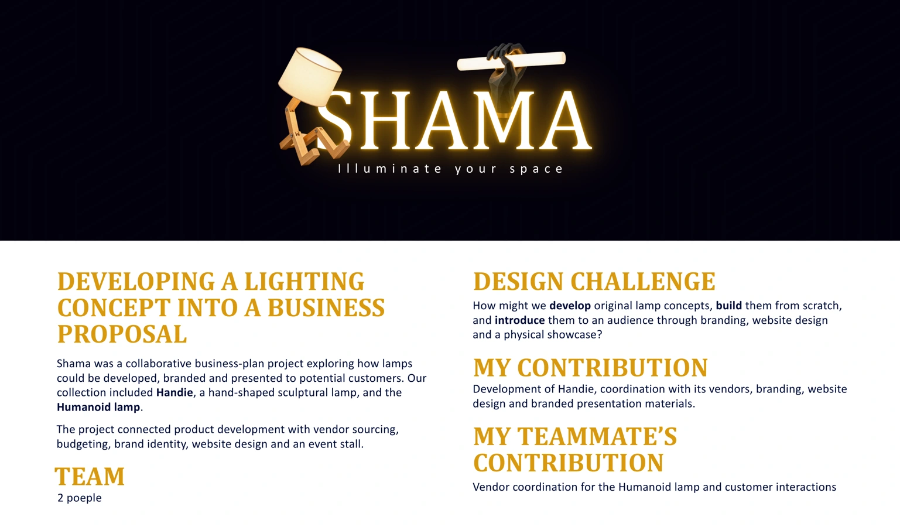
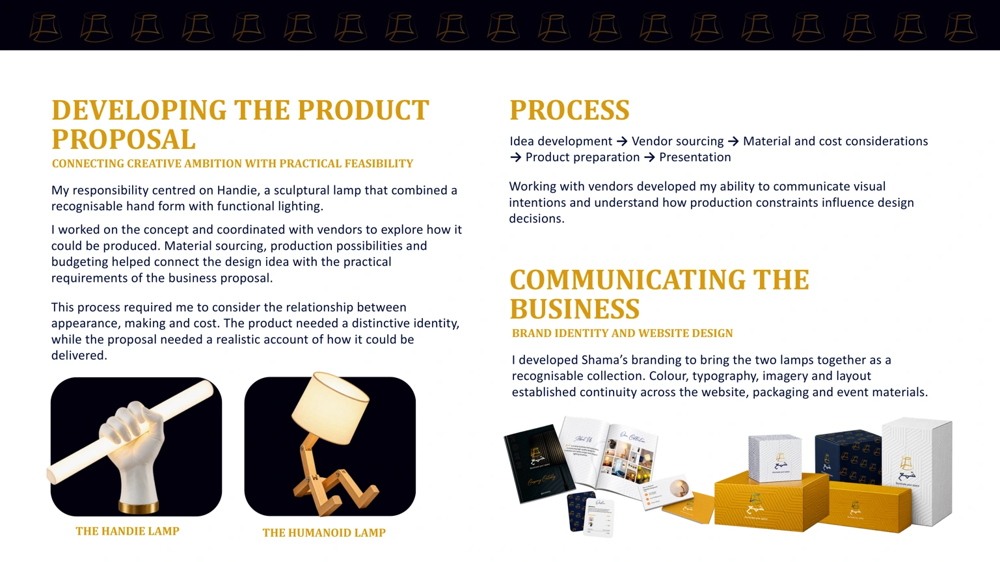
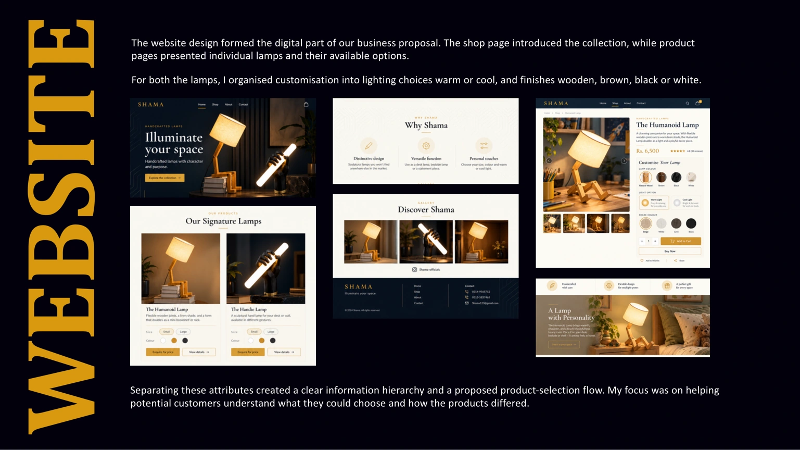
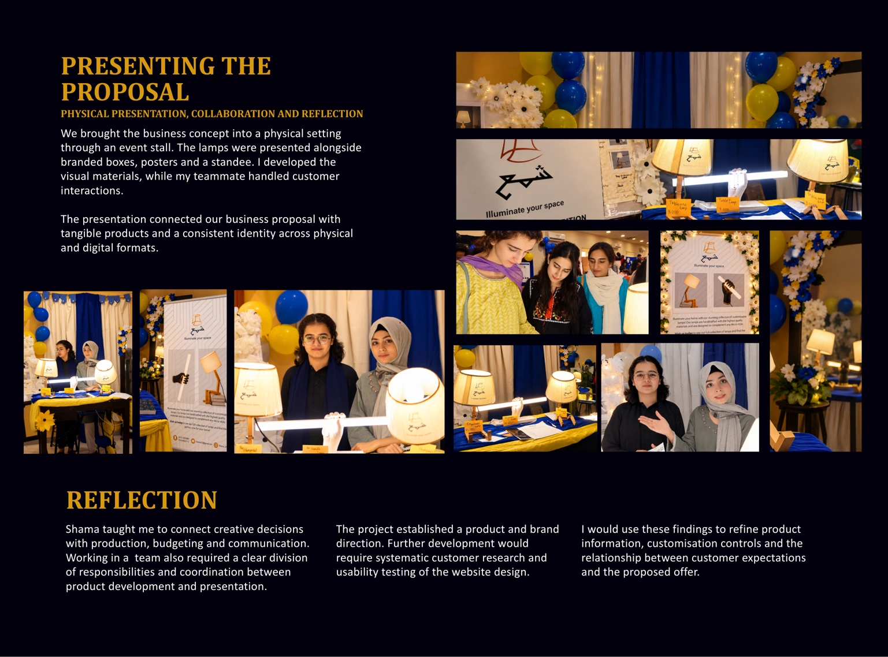

SHAMA I l l u m i n a t e y o u r s p a c e DEVELOPING A LIGHTING CONCEPT INTO A BUSINESS PROPOSAL DESIGN CHALLENGE TEAM MY CONTRIBUTION MY TEAMMATE’S CONTRIBUTION Shama was a collaborative business-plan project exploring how lamps could be developed, branded and presented to potential customers. Our collection included Handie, a hand-shaped sculptural lamp, and the Humanoid lamp. The project connected product development with vendor sourcing, budgeting, brand identity, website design and an event stall. How might we develop original lamp concepts, build them from scratch, and introduce them to an audience through branding, website design and a physical showcase? 2 poeple Development of Handie, coordination with its vendors, branding, website design and branded presentation materials. Vendor coordination for the Humanoid lamp and customer interactions

I developed Shama’s branding to bring the two lamps together as a recognisable collection. Colour, typography, imagery and layout established continuity across the website, packaging and event materials. DEVELOPING THE PRODUCT PROPOSAL COMMUNICATING THE BUSINESS PROCESS CONNECTING CREATIVE AMBITION WITH PRACTICAL FEASIBILITY BRAND IDENTITY AND WEBSITE DESIGN THE HANDIE LAMP THE HUMANOID LAMP My responsibility centred on Handie, a sculptural lamp that combined a recognisable hand form with functional lighting. I worked on the concept and coordinated with vendors to explore how it could be produced. Material sourcing, production possibilities and budgeting helped connect the design idea with the practical requirements of the business proposal. Idea development → Vendor sourcing → Material and cost considerations → Product preparation → Presentation Working with vendors developed my ability to communicate visual intentions and understand how production constraints influence design decisions. This process required me to consider the relationship between appearance, making and cost. The product needed a distinctive identity, while the proposal needed a realistic account of how it could be delivered.

WEBSITE The website design formed the digital part of our business proposal. The shop page introduced the collection, while product pages presented individual lamps and their available options. For both the lamps, I organised customisation into lighting choices warm or cool, and finishes wooden, brown, black or white. Separating these attributes created a clear information hierarchy and a proposed product-selection flow. My focus was on helping potential customers understand what they could choose and how the products differed.

We brought the business concept into a physical setting through an event stall. The lamps were presented alongside branded boxes, posters and a standee. I developed the visual materials, while my teammate handled customer interactions. Shama taught me to connect creative decisions with production, budgeting and communication. Working in a team also required a clear division of responsibilities and coordination between product development and presentation. The project established a product and brand direction. Further development would require systematic customer research and usability testing of the website design. I would use these findings to refine product information, customisation controls and the relationship between customer expectations and the proposed offer. The presentation connected our business proposal with tangible products and a consistent identity across physical and digital formats. PRESENTING THE PROPOSAL REFLECTION PHYSICAL PRESENTATION, COLLABORATION AND REFLECTION
